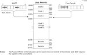

To rapidly access the RAM space in PIC18 devices, the memory is split using the banking scheme. This divides the memory space into contiguous banks of 256 bytes each. Depending on the instruction, each location can be addressed directly by its full address or by an 8-bit low-order address and a bank pointer.
Most instructions in the PIC18 instruction set make use of the bank
pointer known as the Bank Select Register (BSR). This SFR holds the Most Significant bits of a location’s
address; the instruction itself includes the eight Least Significant bits. The BSR can be
loaded directly by using the MOVLB instruction.
The value of the BSR indicates the bank in data memory being accessed; the eight bits in the instruction show the location in the bank and can be thought of as an offset from the bank’s lower boundary. The relationship between the BSR’s value and the bank division in data memory is shown in Figure 9-4.
When writing the firmware in assembly, the user must ensure that the proper bank is selected before performing a data read or write. When using the C compiler to write the firmware, the BSR is tracked and maintained by the compiler.
While any bank can be selected, only those banks that are actually
implemented can be read or written to. Writes to unimplemented banks are ignored, while
reads from unimplemented banks will return ‘0’. Refer to Figure 9-3 for a list of implemented banks.
